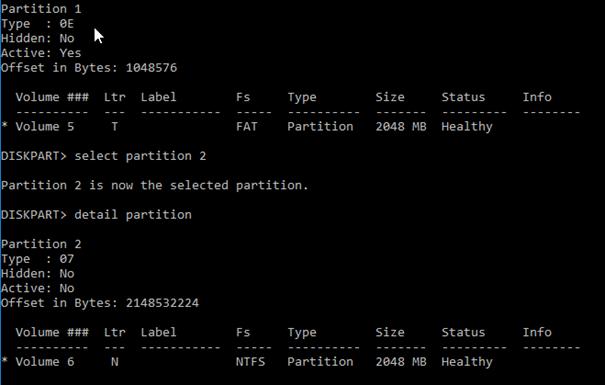
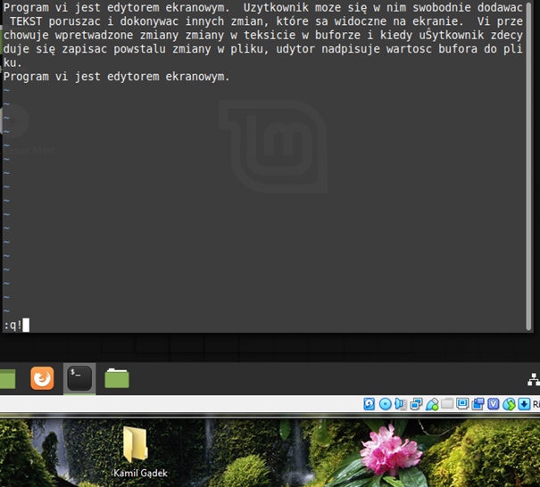
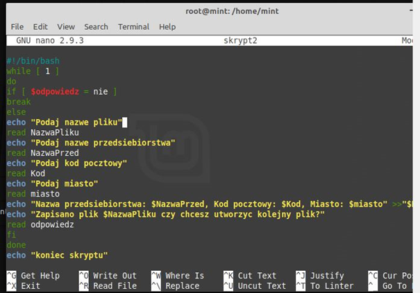

Windows 10 ma wiele narzędzi umożliwiających zarządzanie systemem z poziomu
interfejsu graficznego, takich jak panel sterowania, czy gpedit.msc. Na tych zajęciach
będziesz korzystał głównie z aplikacji konsolowych (głównie cmd). Na poniższym zrzucie
ekranu przedstawiono narzędzie DISKPART, służące do zarządzania dyskami.

W Linuksie większość operacji wykonuje się za pomocą wiersza poleceń, dlatego sprawne
poruszanie się w konsoli jest podstawą do zarządzania tego typu systemem. Dużą rolę odgrywają
również pliki konfiguracyjne, do ich modyfikacji przydaje się znajomość Linuksowych edytorów
tekstowych, jednym z nich jest edytor vi, który poznasz na zajęciach. Na zrzucie ekranu
przedstawiono proste ćwiczenie polegające na zapisywaniu tekstu, a następnie jego
modyfikowaniu w edytorze vi.

Na poniższym zrzucie ekranu jest przedstawiony inny edytor tekstowy (nano), w którym
napisano skrypt pobierający dane od użytkownika i wyświetlający je w konsoli.
